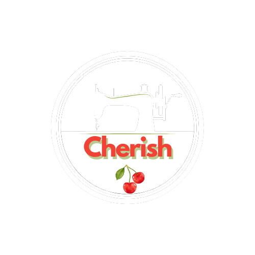

Çok Satanlar

Siyah Düz Kare Yaka
Askılı Büzgülü Örme Bluz

Beyaz Tek Omuzlu
Örme Bluz

Ekru Askılı
Korse Dokuma Bluz

Mavi Crop Astarlı
Poplin Gömlek

Mavi Kolları Vatkalı
Taşlı Crop Dokuma Gömlek

Mavi Geniş Yaka
Crop Dokuma Gömlek
Cherish, kadınların tarzını ve güvenini yansıtan özgün koleksiyonlarıyla dikkat çekiyor. Her anınızda kendinizi özel hissedin.
Çok Satanlar |
||
Siyah Düz Kare Yaka |
Beyaz Tek Omuzlu |
Ekru Askılı |
Mavi Crop Astarlı |
Mavi Kolları Vatkalı |
Mavi Geniş Yaka |
Tüm hakları CherishTM limited şirketine aittir.